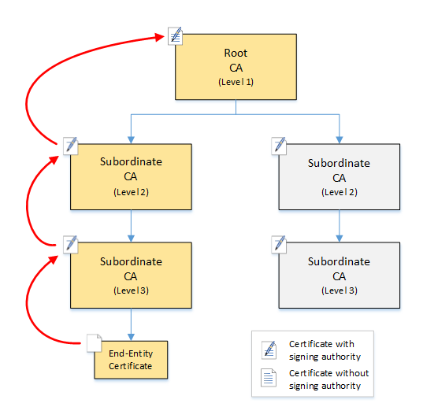

This lesson introduces Public Key Infrastructure (PKI), explaining its role in secure digital communication. Students will learn about asymmetric encryption, certificate authorities, certificate chaining, and the certificate signing process. This knowledge is essential for managing secure connections, verifying identities, and understanding how encrypted communications are validated on the Internet.
Learning Objectives
Explain the purpose and function of Public Key Infrastructure (PKI).
Describe the roles of root, intermediate, and issuing certificate authorities.
Understand the certificate signing request (CSR) process and the required information.
Identify the role of Registration Authorities (RAs) in certificate validation.
Asymmetric Encryption & PKI
PKI provides a framework for creating, managing, distributing, and revoking digital certificates, which rely on asymmetric encryption. Asymmetric encryption uses a public/private key pair to encrypt and decrypt data, ensuring secure communications. Public keys are distributed via certificates issued by Certificate Authorities (CAs), while private keys remain securely with the owner.
Certificate Authorities (CAs)

Certificate authorities are trusted organizations responsible for issuing and validating public certificates. They are typically arranged in a hierarchy to increase security, known as certificate chaining:
Root CA: The first CA created, holding a self-signed certificate used to validate subordinate CAs.
Intermediate CA: Also called subordinate CAs, they validate issuing CAs and add an additional security layer.
Issuing CA: The CA that validates requests and distributes certificates to end users or organizations.
Certificate Signing Request (CSR) Process
To obtain a certificate, an organization submits a CSR to a certificate authority. A CSR contains key information about the organization and the public key to be certified.
CSR Information
Description
Common Name
The fully qualified domain name (FQDN) of the website. Example: www.example.com
Subject Alternative Name (SAN)
Optional field covering multiple host names in one certificate. Example: shop.example.com, mail.example.com
Organization
The full legal name of the organization, including suffixes. Example: Example Corporation, Inc.
Organizational Unit
The division handling the certificate. Example: IT Department
City/Locality
The city where the organization is located. Example: Springfield
State/County/Region
The full name of the state or region, not abbreviated. Example: Illinois
Country
Two-letter country code. Example: US
Email Address
Contact email for the person managing the certificate. Example: sysadmin@example.com
Public Key
The public key generated as part of the key pair included in the CSR.
After submission, the CA validates the information and issues the certificate. Sometimes, a third-party Registration Authority (RA) assists in validation. RAs are authorized by a root CA to perform validation for specific purposes only.
Certificates in Practice
Chain of trust: your browser trusts a small set of root CA certificates built into the operating system. A website's certificate is trusted because it was signed by an intermediate CA, which was signed by a trusted root. The root certificate is self-signed; nothing signs it.
Self-signed certificates: signed by their own key, not a CA. Fine for labs and internal testing; browsers warn users, so don't use them on public sites.
Wildcard certificates (*.example.com) cover every subdomain at one level. Convenient, but if the private key is stolen, every subdomain is exposed.
Subject Alternative Name (SAN): lists several exact names on one certificate, for example example.com and www.example.com.
Revocation: if a private key is compromised, the CA revokes the certificate before it expires. Browsers check with a CRL (Certificate Revocation List, a published list) or OCSP (Online Certificate Status Protocol, a live check of one certificate). With OCSP stapling the web server attaches a recent OCSP answer itself.
Expiration: public certificates now last about a year or less, and the maximum is being cut further, so renewals are automated (for example with ACME and Let's Encrypt).
Mutual TLS (mTLS): normally only the server shows a certificate. In mTLS the client also presents one, so both sides are authenticated. It is common between services in zero-trust designs.
Key escrow: a trusted third party keeps a copy of keys so data can be recovered if a key is lost.
Watch
Video: Professor Messer, "Certificates – CompTIA Security+ SY0-701 – 1.4" (free Security+ course; SY0-701 is the current exam).
Check your understanding
A company's web server private key was stolen today, but its certificate is valid for another eight months. What should happen?
Revocation is for exactly this case. Clients that check CRL or OCSP will stop trusting the stolen key.
What is the main risk of using one wildcard certificate (*.example.com) for every server?
One key protects every subdomain, so one compromise affects all of them. Keep wildcard keys on as few servers as possible.
Try it in your browser (5 minutes)
Open any HTTPS website, click the icon to the left of the address and open the certificate details.
Find the issuer (which CA signed it), the validity dates, and the Subject Alternative Names.
Look at the certification path: how many certificates are in the chain from the site up to the root?